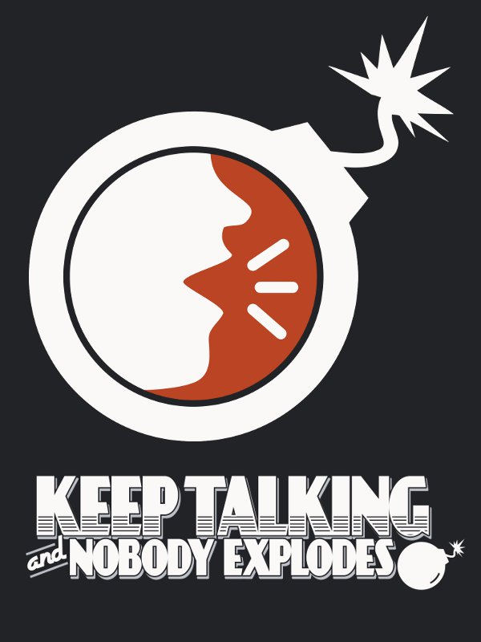
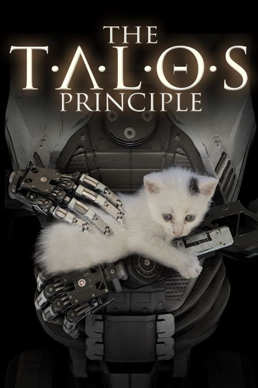

Puzzle Games are games meant to challenge the brain and challenge your critical thinking. These types of games are great for younger and older types of people as they can teach and keep your mind fresh. However, it does not exclude anyone from the middle age group to enjoy them.
Portal 2
Release Date: April 18, 2011 Rating: 10/10 Anyone who hasn't played a game of the Portal franchise just yet should make it their goal to try Portal 2 at the very least. The sequel to the original award-winning game brings the player back into GLaDOS's hands in a series of complex puzzles that require great environmental awareness to nail.With the help of the portal gun, a player must traverse their environment by passing through time and space in the form of round portals. Meanwhile, they follow an engaging sci-fi story centered around a nefarious and hilarious AI that guides them.
It takes two
Release Date: March 25th, 2021 Rating: 9/10 The game requires two players as you control a couple who have been transformed into dolls. They have to remedy the situation with their platforming and problem-solving skills. Where this game excels is in its variety. The title includes all sorts of different puzzles, and each one fits the environment the protagonists are in at the time.
Keep Talking and Nobody Explodes

Release Date: October 13, 2016 (PC), August 16, 2018 (Consoles) Rating: 10/10 Keep Talking and Nobody Explodes is a party game which forces players to work together in order to defuse a bomb. Essentially, one player is tasked with defusing a complex bomb, while the others have the guide on how to do it, but can't actually see the bomb. It's the perfect team puzzle game experience for an ice breaker, or just to build more synergy in a group and have fun.
Superliminal
Release Date: November 5th, 2020 Rating: 9/10 Games that play tricks on your mind can be a headache to get through, but Superliminal is a whole lot of exciting, fun, and extremely weird. Your surroundings are definitely not what you think they are in this game where everything you see and hear should be questioned at all times.
The Talos Principle

Release Date: December 11th, 2014 Rating: 10/10 The Talos Principle introduces the player to an android character brought into a vibrant world of old ruins and technology, in which they must uncover the truth about themselves and humanity.